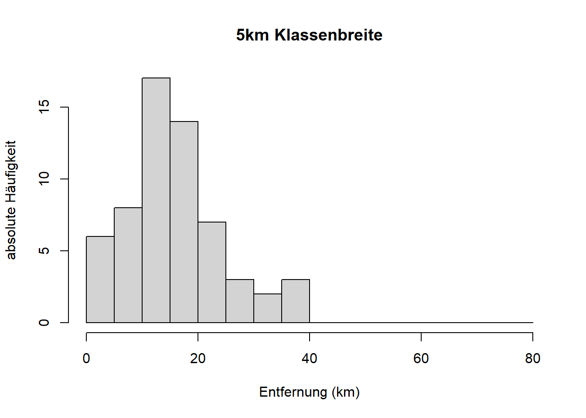
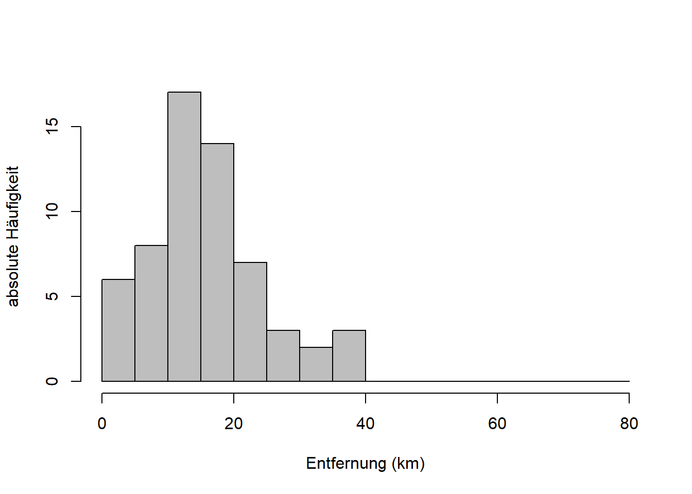

Kapitel 3 Häufigkeiten und Lageparameter
Mit diesem Kapitel des Skriptes steigen wir in die deskriptive Statistik ein. Lesen Sie hierzu bitte Kapitel 3.2.1 und 3.2.2 von Zimmermann-Janschitz (2014). Im folgenden finden Sie wie gehabt Leitfragen und Ergänzungen zu diesen Kapiteln.
3.1 Ziel der deskriptiven Statistik
Jene Eigenschaft eines Untersuchungselements, die für die statistische Untersuchung von Bedeutung ist, wird als Merkmal \(X\) des Elements bezeichnet. Der Merkmalswert \(x_i\) mit \(i=1,\ldots,n\) ist jener Wert, den ein Merkmal \(X\) in einer statistischen Untersuchung tatsächlich annimmt. Ziel der deskriptiven Statistik ist es, die Verteilung der Merkmalswerte eines Merkmals über den möglichen Wertebereich (Ausprägungen) mit einzelnen Parametern näher zu charakterisieren. Z.B. die Anzahl der Ausbrüche eines Vulkans an verschiedenen Tagen.
Die Parameter sind:
- Lageparameter: Maße der zentralen Tendenz einer Verteilung (s. dieses Kapitel)
- Streuungsparameter: Maße der Variabilität einer Verteilung (s. Kapitel 4)
- Schiefe und Wölbung einer Verteilung (s. Kapitel 4)
Dazu brauchen wir erstmal Begriffe wie absolute Häufigkeit, relative Häufigkeit und Summenhäufigkeit sowie Diagramme wie Histogramme und Boxplots, die Verteilungen graphisch darstellen.
3.2 Häufigkeiten
Schauen wir uns dazu Ihre Reisedaten an, und zwar nur die Entfernungen (der R-Code wird in den PC-Übungen schnell klar werden):
# Paket laden, das für das Einlesen von xlsx gebraucht wird
library("readxl")
# Daten einlesen
reisedat <- read_excel("data/Daten_Distanz_Stationen.xlsx")
# in Zahlen und data.frame umwandeln
reisedat <- as.data.frame(apply(reisedat,2,as.numeric))
# Ausgabe von reisedat$distanz
reisedat$distanz## [1] 25.01 19.40 16.70 9.20 15.80 13.30 11.00 19.42
## [9] 14.50 22.70 20.00 5.60 14.00 16.90 24.40 10.00
## [17] 14.00 6.80 2.50 15.60 8.90 21.00 8.49 8.60
## [25] 17.70 29.00 29.00 21.00 11.30 10.30 3.60 15.00
## [33] 40.00 40.00 50.00 12.60 16.00 8.20 7.30 9.58
## [41] 17.20 18.80 14.70 10.00 11.00 2.90 14.40 8.60
## [49] 9.85 13.40 20.00 6.00 13.40 19.00 5.20 5.50
## [57] 15.80 9.12 18.00 8.20 14.40 5.10 26.00 9.70
## [65] 30.80 6.90 8.20 18.00 7.60 9.80 12.50 28.20
## [73] 8.80 17.30Das ist eine ungeordnete Reihe von 74 Datenpunkten, die sogenannten Rohdaten.
Wenn wir die Rohdaten jetzt ordnen und in Klassen einteilen können wir absolute Häufigkeiten bestimmen, gewissermaßen durch Abzählen:
## [1] 2.50 2.90 3.60 5.10 5.20 5.50 5.60 6.00
## [9] 6.80 6.90 7.30 7.60 8.20 8.20 8.20 8.49
## [17] 8.60 8.60 8.80 8.90 9.12 9.20 9.58 9.70
## [25] 9.80 9.85 10.00 10.00 10.30 11.00 11.00 11.30
## [33] 12.50 12.60 13.30 13.40 13.40 14.00 14.00 14.40
## [41] 14.40 14.50 14.70 15.00 15.60 15.80 15.80 16.00
## [49] 16.70 16.90 17.20 17.30 17.70 18.00 18.00 18.80
## [57] 19.00 19.40 19.42 20.00 20.00 21.00 21.00 22.70
## [65] 24.40 25.01 26.00 28.20 29.00 29.00 30.80 40.00
## [73] 40.00 50.00# absolute Häufigkeiten bestimmen für Klassen von 0 bis 55km mit Breite 5km
hist(reisedat$distanz, breaks = seq(0, 55, 5),
main = "", xlab = "Entfernung (km)",
ylab = "absolute Häufigkeit") Diese Darstellung ist ein Histogramm. Dazu später mehr. Das Ordnen geschieht bei der Erechnung des Histogramms automatisch, hier haben wir es nur der Anschaulichkeit halber eingefügt.
Diese Darstellung ist ein Histogramm. Dazu später mehr. Das Ordnen geschieht bei der Erechnung des Histogramms automatisch, hier haben wir es nur der Anschaulichkeit halber eingefügt.
Die absolute Häufigkeit, bezeichnet mit \(h_j\) für \(h\left(a_j\right)\) und \(j=1,\ldots,m\), gibt also die Anzahl der statistischen Einheiten in einer Stichprobe an, welche die Merkmalsausprägung \(a_j\) für ein Merkmal \(X\) annehmen. In unserem Beispiel haben wir die Merkmalsausprägungen durch Klassifizierung gewissermaßen künstlich erzeugt da die Menge der Ausprägungen des Merkmals “distanz” ja nicht abzählbar ist. Im Beispiel der Anzahl Vulkanausbrüche in Zimmermann-Janschitz (2014) gibt es dagegen abzählbare Merkmalsausprägungen.
Die Summe der absoluten Häufigkeiten ist der Stichprobenumfang \(n\): \[\sum_{j=1}^{m}h_j=n \quad\text{mit}\quad m\leq n\]
Die relative Häufigkeit, bezeichnet mit \(f_j\) für \(f\left(a_j\right)\) und \(j=1,\ldots,m\), gibt dann den Anteil der statistischen Einheiten an einer Stichprobe an, welche die Merkmalsausprägung \(a_j\) für ein Merkmal \(X\) annehmen: \[f_j=f\left(a_j\right)=\frac{h\left(a_j\right)}{n}\]
Das Histogramm bleibt gleich, nur dass die vertikale Achse anders skaliert ist. Da das in der hist() Funktion nicht vorgesehen ist, ist der R-Code etwas länger:
# Histogramm berechnen ohne Output
h <- hist(reisedat$distanz, breaks = seq(0, 55, 5), plot = FALSE)
# absolute in relative Häufigkeiten umrechnen
h$counts <- h$counts / sum(h$counts)
# Histogrammdaten plotten
plot(h, freq = TRUE, col = "gray",
main = "", xlab = "Entfernung (km)",
ylab = "relative Häufigkeit") Interpretation: Der ersten Balken z.B. geht bis knapp unter 0.05, d.h. knapp 5% der Entfernungsdaten haben Werte zwischen 0 und 5km. Wenn wir uns das Histogramm der absoluten Häufigkeiten weiter oben anschauen dann sehen wir, dass das etwa 3 von 74 Datenpunkten sind.
Die Summe der relativen Häufigkeiten ist 1, was 100% entspricht: \[\sum_{j=1}^{m}f_j=1 \quad\text{mit}\quad m\leq n\]
Kommen wir nun zu den Summenhäufigkeiten, auch genannt kumulative Häufigkeit oder kumulierte Häufigkeit. Die absolute Summenhäufigkeit einer Merkmalsausprägung \(a_j\) ist die Anzahl der Merkmalswerte, die kleiner oder gleich \(a_j\) sind. Die relative Summenhäufigkeit von \(a_j\) ist dementsprechend der Anteil der Merkmalswerte, die kleiner oder gleich \(a_j\) sind. Am besten visualisieren wir das kurz in R:
# Histogramm berechnen ohne Output
h <- hist(reisedat$distanz, breaks = seq(0, 55, 5), plot = FALSE)
# Häufigkeiten kumuliert aufsummieren
h$counts <- cumsum(h$counts)
# Histogrammdaten plotten
plot(h, freq = TRUE, col = "gray",
main = "", xlab = "Entfernung (km)",
ylab = "absolute Summenhäufigkeit")
# absolute Summenhäufigkeiten in relative umrechnen
h$counts <- h$counts / max(h$counts)
# Histogrammdaten plotten
plot(h, freq = TRUE, col = "gray",
main = "", xlab = "Entfernung (km)",
ylab = "relative Summenhäufigkeit") Die Häufigkeiten der Klassen sind hier kumuliert aufsummiert, d.h. der letzte Balken ganz rechts hat die absolute Höhe 74, die Gesamtzahl der Datenpunkte \(n\), bzw. die relative Höhe 1 (100%). Sehen die dazu auch das Beispiel in Zimmermann-Janschitz (2014), Tabelle 3.10 auf Seite 87.
Die Häufigkeiten der Klassen sind hier kumuliert aufsummiert, d.h. der letzte Balken ganz rechts hat die absolute Höhe 74, die Gesamtzahl der Datenpunkte \(n\), bzw. die relative Höhe 1 (100%). Sehen die dazu auch das Beispiel in Zimmermann-Janschitz (2014), Tabelle 3.10 auf Seite 87.
Abschließend noch ein paar Worte zur Klassifizierung. Äquidistante Klassen, d.h. Klassen gleicher Breite, sind grundsätzlich zu bevorzugen. In R können Sie eine gewünschte Anzahl Klassen angeben, die dann äquidistant über den Wertebereich verteilt werden. Das ist sinnvoll für einen ersten Eindruck. Die Grundeinstellung von 10 Klassen ist dabei meist ausreichend. Im Laufe der Analyse wird es manchmal sinnvoller sein, bestimmte Klassen vorzugeben, auch (oder gerade) wenn manche Klasse in der betrachteten Stichprobe nicht vorkommen. Auch das ist in R möglich, in dem Sie die Klassengrenzen (“breaks”) angeben. Probieren wir das in R aus:
# Klassenbreite 5km
hist(reisedat$distanz, breaks = seq(0, 60, 5),
main = "", xlab = "Entfernung (km)",
ylab = "absolute Häufigkeit")
# Klassenbreite 10km
hist(reisedat$distanz, breaks = seq(0, 60, 10),
main = "", xlab = "Entfernung (km)",
ylab = "absolute Häufigkeit")
# Klassenbreite 20km
hist(reisedat$distanz, breaks = seq(0, 60, 20),
main = "", xlab = "Entfernung (km)",
ylab = "absolute Häufigkeit")

 Je größer die Klassenbreite desto mehr Nuancen der Verteilung der Werte geht verloren. Je kleiner die Klassenbreite desto mehr Lücken entstehen im Histogramm und die generelle Form der Verteilung tritt in den Hintergrund. Eine geeignete mittlere Klassenbreite wird man nur durch Ausprobieren hinbekommen. Siehe aber Zimmermann-Janschitz (2014), S. 91-102 für Richtlinien zur Klassenbildung.
Je größer die Klassenbreite desto mehr Nuancen der Verteilung der Werte geht verloren. Je kleiner die Klassenbreite desto mehr Lücken entstehen im Histogramm und die generelle Form der Verteilung tritt in den Hintergrund. Eine geeignete mittlere Klassenbreite wird man nur durch Ausprobieren hinbekommen. Siehe aber Zimmermann-Janschitz (2014), S. 91-102 für Richtlinien zur Klassenbildung.
3.3 Lageparameter
Lageparameter sind Maße der zentralen Tendenz einer Häufigkeitsverteilung. Siehe Zimmermann-Janschitz (2014), Kapitel 3.2.2. Wichtig sind uns in dieser Veranstaltung der Modus, das arithmetische Mittel und der Median, weniger das harmonische Mittel und das geometrische Mittel, die Sie aber bei Zimmermann-Janschitz (2014) nachlesen können.
Der Modus \(\bar x_{mod}\) entspricht jener Merkmalsausprägung \(a_j\), die in der Häufigkeitsverteilung (lokal) am häufigsten vorkommt. In unseren Entfernungsdaten wäre das der Wert 7.5:
h <- hist(reisedat$distanz, breaks = seq(0, 55, 5), plot = FALSE)
plot(h, freq = TRUE, col = "gray",
main = "", xlab = "Entfernung (km)",
ylab = "absolute Häufigkeit")
# Gib Klassenmitte aus an der Stelle wo die Häufigkeiten gleich dem Maximum sind
h$mids[h$counts==max(h$counts)]## [1] 7.5Bei “künstlichen” Klassen wie in unserem Beispiel wird typischerweise die Mitte der häufigsten Klasse angegeben. Sie sehen also, der Modus ist in diesem Fall abhängig von der gewählten Klassifizierung und nicht eindeutig. In der obigen Darstellung sehen wir außerdem weitere lokale Maxima bei 17.5, 27.5, 37.5 und 47.5, es handelt sich also in dieser Klassifizierung um eine multimodale Verteilung, eine Verteilung mit mehreren Modi.
Das arithmetische Mittel \(\bar x\) der Merkmalswerte \(x_1, x_2, \ldots, x_n\) ist die Summe aller Merkmalswerte \(x_i\) relative zur Stichprobengröße \(n\): \[\bar x=\frac{\sum_{i=1}^{n}x_i}{n}\]
Liegen absolute oder relative Häufigkeiten für die Merkmalsausprägungen \(a_j\) vor, kann das arithmetische Mittel \(\bar x\) gewichtet berechnet werden:
\[\bar x=\frac{\sum_{j=1}^{m}a_j\cdot h_j}{n}=\sum_{j=1}^{m}a_j\cdot f_j\quad\text{mit}\quad m\leq n\]
Berechnen wir das arithmetische Mittel für unsere Entfernungsdaten mit der Funktion mean:
## [1] 14.98Andere Mittelwerte sind das geometrische Mittel und das harmonische Mittel, siehe Zimmermann-Janschitz (2014), S. 126-134.
Der Median \(\bar x_{med}\) schließlich entspricht jenem Merkmalswert \(x_j\) in einer Häufigkeitsverteilung, der eine geordnete Reihe von Merkmalswerten \(x_1, x_2, \ldots, x_n\) in zwei gleich große Wertebereiche teilt. Für eine ungerade Anzahl von Merkmalswerten entspricht der Median dem mittleren Wert: \[\bar x_{med}=x_{\frac{n+1}{2}}\]
Für eine gerade Anzahl von Merkmalswerten wird der Median aus dem arithmetischen Mittel der beiden mittleren Werte errechnet: \[\bar x_{med}=\frac{x_{\frac{n}{2}}+x_{\frac{n}{2}+1}}{2}\]
Berechnen wir den Median für unsere Entfernungsdaten mit der Funktion median:
## [1] 13.7Der Median wird auch 0,5-Quantil genannt. Allgemein entspricht ein p-Quantil \(\bar x_p\) mit \(0\leq p\leq 1\) jenem Merkmalswert \(x_j\) in einer Häufigkeitsverteilung, der eine geordnete Reihe von Merkmalswerten \(x_1, x_2, \ldots, x_n\) in zwei Wertebereiche teilt, so dass ein Anteil \(p\) der Werte kleiner oder gleich \(x_j\) ist. Ist das Produkt \(n\cdot p\) nicht ganzzahlig, wird für \(j\) die dem Produkt nächstgrößere Zahl verwendet: \[\bar x_p=x_j\]
Ist das Produkt \(n\cdot p\) ganzzahlig, dann ist \(j=n\cdot p\): \[\bar x_p=\frac{x_j+x_{j+1}}{2}\]
Auf Quantile werden wir im Zuge theoretischer Verteilungen noch näher zu sprechen kommen (Kapitel 7).
Literatur
Zimmermann-Janschitz, S. 2014. Statistik in Der Geographie. Berlin: Springer Spektrum.